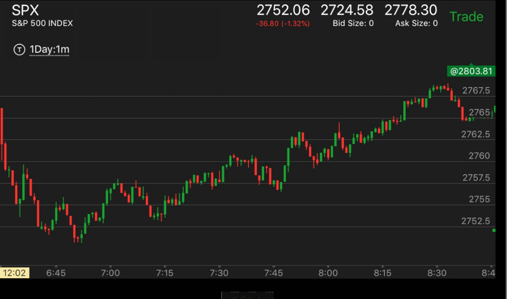
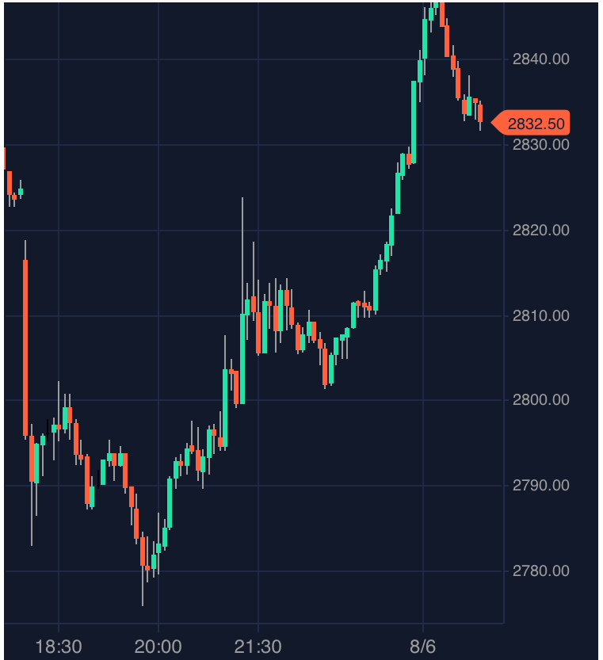

两次加速反转很强的第一浪
- 第一浪很强的时候，不一定非要用更大的第二浪来反转，而是可以用两个连续加速来反转。这样，所用的幅度很小就反转了。
- 这样是有道理的，因为一次加速的话，它必须超过第一段的幅度，如果没有超过，那么就不会反转，但是如果再次加速，那么
就反转了。
- 在反向走势当中，第二次加速非常的隐蔽，只有一分钟，而且幅度很小，很快就反转了。
- 可以把两个加速本身看作是一个两段走势，这样前面的很强的第一浪就会反转了。
- 反转后，它至少会超过很强第一浪的起点。有时候，它刚刚超过就，反转了；
但是取决反向运动的样子，它也可能大大超过第一浪的起点。一直运动下去。

图示：开盘后，出现了很强的第一浪下跌，反弹后，再次下跌。加速。但是第二浪的幅度不如第一浪。
不能算反转。它再次反弹后，再次下跌。又一次加速。没有停留的直接越过低点。两次加速就完成了反转。它开始上涨后，
至少会超过开盘的高点。

图示：盘后走势，开盘后大跌，跌幅很大。这个就是第一浪。它后面出现了两次加速下跌。
这样就反转了。虽然两次加速的幅度都不如第一浪幅度。可以看到，它在突破第一浪高点的时候，徘徊了很久。然后大幅上涨。
说明不是刚刚突破就算了。